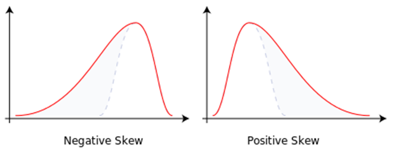
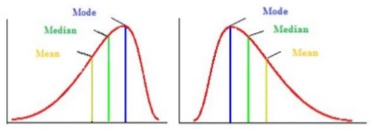
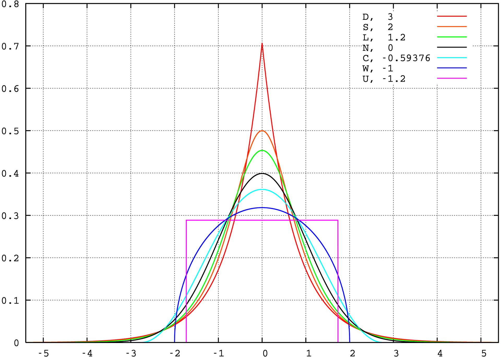
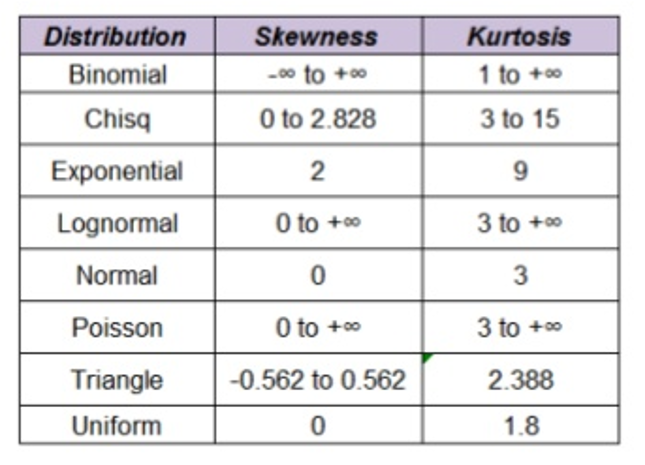

偏度和峰度都是统计量
偏度Skewness(三阶) ：三阶中心距除以标准差的三次方。描述分布偏离对称性程度的一个特征数。
峰度Kurtosis (四阶) ：四阶中心矩除以标准差的平方 减去三。 用来反映频数分布曲线顶端尖峭或扁平程度的指标。
skew
是研究数据分布对称的统计量。通过对偏度系数的测量，我们能够判定数据分布的不对称程度以及方向。
具体来说，对于随机变量X，我们定义偏度为其的三阶标准中心矩:
$$
\mathrm{Skew}(\mathbf{X}) = E[(\frac{\mathbf{X}-\mu}{\sigma})^3] = \frac{E[(\mathbf{X}-\mu)^3]}{(E[(\mathbf{X}-\mu)^2])^{3/2}}=\frac{k_3}{k_2^{3/2}}
$$
其中： $\mu$为随机变量均值，$\sigma$为随机变量标准差
而对于样本的偏度，我们一般简记为SK，我们可以基于矩估计，得到有：
$$
\mathrm{SK} =\frac{m_3}{m_2^{3/2}} = \frac{\frac{1}{n}\sum(x_i-\bar x)^3}{[\frac{1}{n}\sum(x_i-\bar x)^2]^{3/2}}
$$
其中： $\bar x$为样本均值，$m_3$为样本三阶中心矩，$m_2$为样本的二阶中心矩。样本偏度的计算结果都属于有偏估计。
偏度的衡量是相对于正态分布来说，正态分布的偏度为0。因此我们说，若数据分布是对称的，偏度为0。
若偏度>0，则可认为高峰在左，分布为右偏，即分布有一条长尾在右；
若偏度<0，则可认为高峰在右，分布为左偏，即分布有一条长尾在左。
若偏度 = 0 - mean = median, the distribution is symmetrical around the mean.
同时偏度的绝对值越大，说明分布的偏移程度越严重。


Kurtosis
峰度，Kurtosis，是研究数据分布陡峭或平滑的统计量，通过对峰度系数的测量，我们能够判定数据分布相对于正态分布而言是更陡峭(peakedness)还是平缓(flattening)。
对于随机变量X，我们定峰度为其的四阶标准中心矩:
$$
\mathrm{Kurtosis}(\mathbf{X}) = E[(\frac{\mathbf{X}-\mu}{\sigma})^4] = \frac{E[(\mathbf{X}-\mu)^4]}{(E[(\mathbf{X}-\mu)^2])^{2}}
$$
此时正太分布的峰度系数是3，但是为了比较起来方便，很多软件（spss，python中的pandas工具）将峰度系数减去3，即使用如下公式计算。对于样本的峰度，我们一般简记为K，可通过如下公式计算样本的峰度系数：
$$
\mathrm{K} =\frac{m_4}{m_2^{2}} - 3 = \frac{\frac{1}{n}\sum(x_i-\bar x)^4}{[\frac{1}{n}\sum(x_i-\bar x)^2]^{2}} -3
$$
上式的分子分母都不是无偏估计量。
- Kurtosis > 3: Leptokurtic distribution, sharper than a normal distribution, with values concentrated around the mean and longer tails.This means high probability for extreme values.
- Kurtosis < 3: Platykurtic distribution, flatter than a normal distribution with a wider peak. The probability for extreme values is less than for a normal distribution, and the values are wider spread around the mean.
- Kurtosis = 3: Mesokurtic distribution - normal distribution for example.
峰度其实是一个相对于正态分布的对比量，正态分布的峰度系数为3，但是为了比较起来方便，很多软件（spss，python中的pandas工具）将峰度系数减去3，此时正态分布峰度值定为0。而均匀分布的峰度为-1.2，指数分布的峰度为6。

常见分布的 skewness 和 kurtosis 值见下表

note：此表中列出的 kurtosis 是未减去 3 的版本。